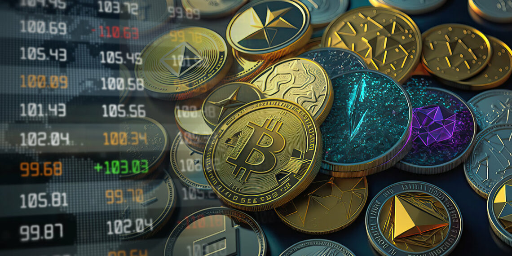

El Bitcoin es una criptomoneda o moneda virtual, concretamente la primera que fue desarrollada. Es la criptomoneda que le ha marcado el camino a todas las demás que llegaron después utilizando su tecnología. Esta tecnología es la cadena de bloques o blockchain, que también se utiliza para otras cosas.
Pero esta moneda es descentralizada, es decir que no existe una autoridad o ente de control que sea responsable de su emisión y registro de sus movimientos.
Las criptomonedas, también llamadas criptodivisas o criptoactivos, son un medio digital de intercambio. Muchas veces puede cumplir la función de una moneda, y de ahí que se las conozca con ese nombre. Sin embargo, también puede utilizarse como activo financiero, la gente las compra y cuando sube su valor las vende.
